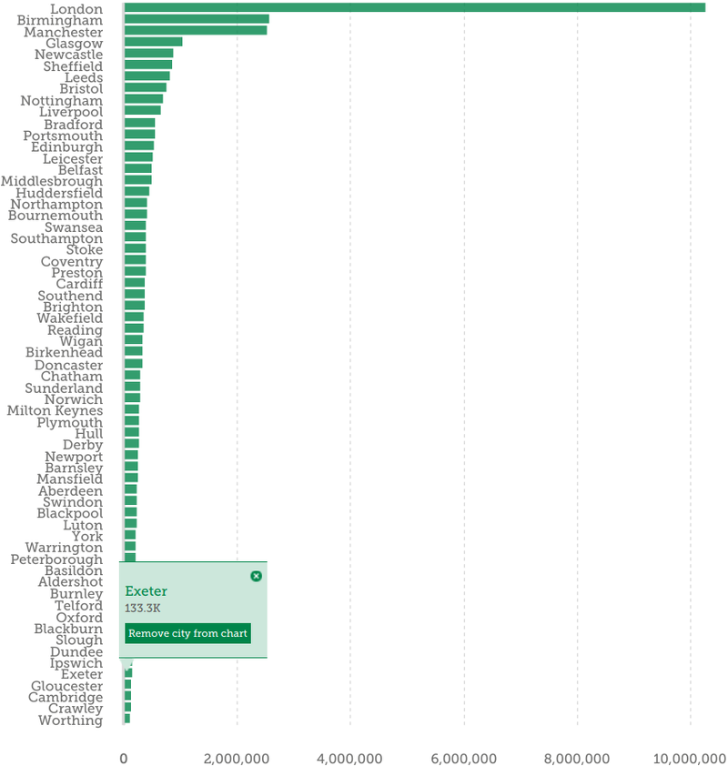
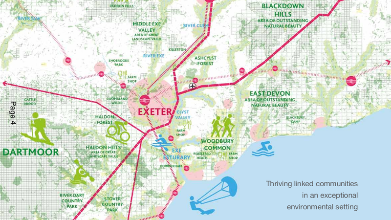
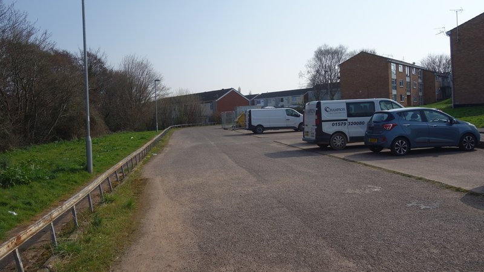
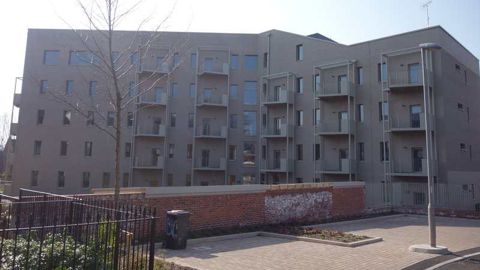
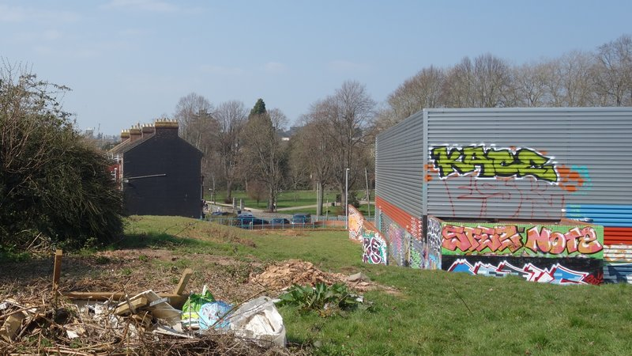

By the time electors go to the polls on 5 May in this year’s local elections, Exeter City Council will have become what the Electoral Reform Society calls a “one party council” because Labour will have been in control for ten straight years.
Academic research has shown that this “weak electoral accountability” greatly increases the likelihood of cronyism, corruption and spending decisions which offer poor value for public money.
In recent stories we have examined decisions to send the council’s chief executive and another senior director to work for Exeter City Futures, which may have been unlawful, to purchase and redevelop the Guildhall shopping centre for £55 million despite significant commercial investment risks, and a sequence of secretive property development decisions involving public land and money which may also be putting the council at risk.
As Exeter Labour’s comms machine grinds into action once more, filling your inboxes, letter boxes and social media feeds with election campaign materials, we embark on a series of stories aimed at providing a much-needed counterbalance to the mix of cheerleading and churnalism often delivered by the city’s media channels when it comes to local politics.
Between now and election day we will look at pledges the party has made during previous election campaigns, examine some of the claims it is making this year and provide an insider’s guide to who’s standing where in the city and what we might expect the results to look like.
As last year we’ll then offer a rolling results service complete with graphical analysis of vote shares and swings as the winners and losers are announced. Follow us @exeterobserver to stay in the loop.
“In May 2021, the people of Exeter put their faith in Labour. We made promises to you and we are delivering on those promises.”
2022 Exeter Labour local elections campaign leaflet
A party that has been in power as long as Labour has in Exeter should not only expect to be the subject of enhanced scrutiny, it should be sufficiently resilient to welcome criticism and prepared to make its case in turn.
When we asked it to respond to a series of questions about its campaign materials, however, it took more than a week to reply, and still didn’t provide any answers. We expected the party to have the sources on which its claims are based to hand, but it seems it does not.
As we cannot address all of Labour’s many statements we’ve included its 2022-23 manifesto in full to enable you to assess its position in detail. We’ve refrained from looking at campaign materials from before 2016, by when it had already been the largest party on the council for five years.
We also haven’t scrutinised Exeter’s other political parties in the same way. Not only have they not been making the decisions for the past ten years, their policy proposals and attempts at intervention are routinely rejected or ignored. It’s the “Labour-led council” we seek to hold to account here, in the public interest and in the public sphere.
Among the most striking claims in the 2022-23 Exeter Labour election manifesto is that “Exeter is the No.1 city in the UK for increase in housing stock”, which it lists among its key achievements during 2021-22. Council leader Phil Bialyk also made this claim during his 2022-23 budget speech, when he said it had been derived from the Centre for Cities.
Centre for Cities housing stock data is out of date: the most recent year it covers is 2019-20. During that year it shows Exeter in 28th place for actual housing stock increase. It is only when this change is viewed as a percentage increase per head of population that Exeter comes out on top, but this is partly a function of the city being amongst the smallest places included in the 63 cities and towns that the Centre for Cities covers.
In fact Exeter only just squeaks over the Centre for Cities’ minimum population threshold of 135,000 on the basis of its large daytime commuter influx. Exeter’s residential population remains below this level.
 Exeter estimated population 2020. Source: Centre for Cities.
Both Exeter Labour and the council have a habit of selectively quoting Centre for Cities statistics without considering methodological issues relating to Exeter’s exceptionally large travel to work area which distorts them — issues which Centre for Cities itself recognises.
Exeter was only included in Centre for Cities reporting when its methodology was changed to reduce its previous emphasis on travel to work areas.
However there is a much more significant issue with these figures, which the Centre for Cities does not factor in: summary housing stock completion data includes Purpose Built Student Accommodation.
Of the 1,137 housing units completed in Exeter in 2019-20, the year to which Labour’s claim refers, more than half were student accommodation bedspaces according to the council’s own monitoring report. In 2020-21 non-student housing completions fell to just 348, over 200 fewer than in 2019-20.
In normative fact-checking terminology this manifesto claim is therefore mostly false: it may contain a kernel of truth but leaves out facts which would produce a different conclusion.
Exeter Labour’s 2022-23 election manifesto goes on to say that this housing stock claim is “reflected in the council exceeding the housing delivery test with a score of 155%”, which it also lists among its key achievements and which council leader Phil Bialyk also included in his 2022-23 budget speech.
However this figure again depends on the inclusion of Purpose Built Student Accommodation in Exeter’s housing delivery totals, despite a 2015 High Court judgement which ruled that Purpose Built Student Accommodation could only be included in local authority five year land supplies if there was evidence that its construction resulted in the release of existing residential housing stock from student occupation.
The council claimed in its September 2021 five year housing land supply statement that Exeter could include student accommodation in its delivery totals as the government had introduced a new housing delivery test methodology in 2018 and new guidance in 2019.
The guidance said that Purpose Built Student Accommodation could be counted as part of the housing supply to the extent it released existing residential housing stock from student occupation, or allowed such stock to remain in general use.
But there is no evidence that residential housing stock is either being retained for or returned to general use in Exeter, as the university’s inexorable expansion continues to outpace the construction of new student accommodation blocks.
Without including Purpose Built Student Accommodation Exeter’s housing delivery test score for 2020-21 would be 93%, making this manifesto claim also mostly false.
This was reflected in a test of the council’s five year housing land supply statement as part of a January planning appeal. In her decision the planning inspector found that the council had overstated its delivery claims.
The supply of Purpose Built Student Accommodation has not kept pace with demand: there are now just under 16,000 university students living in Exeter’s residential housing stock in around 4,500 HMOs which could otherwise be used for residential housing by local people.
This is because Exeter university student numbers have increased dramatically in the past ten years, requiring an additional 12,500 term-time accommodation bedspaces.
The university’s Exeter student roll increased by just under 2,700 in 2020-21. If it has another year of growth like this one another 500 dwellings will be lost from Exeter’s residential housing stock and the number of student HMOs will overtake the number of council houses in the city.
This means that university expansion alone is enough to offset most, if not all, of the housing stock increases resulting from new development. The council’s relentless promotion of the city to incomers and visitors via its parody-proof “Liveable Exeter” and “Exeter Live Better” marketing brands is an additional demand driver.
 Liveable Exeter promotional map. Does anyone who lives here already not know where they are? Source: Exeter City Council.
Neither Exeter Labour’s 2022-23 election manifesto nor its 2022 campaign leaflets have anything to say about these student accommodation issues, which are the result of many years of flawed council student accommodation policy-making.
It hasn’t always been so reticent: in its 2018 manifesto it made commitments to “prevent student development on council-owned land and review the student accommodation planning policy”. It repeated the same pledges during its 2019 campaign in leaflets and its manifesto.
Its 2020 manifesto (for elections which were postponed because of the pandemic) repeated the council land policy promise, and the party subsequently confirmed that it had introduced this policy, but Labour councillors nevertheless approved the redevelopment of Harlequins shopping centre for “co-living”, described as student accommodation “in all but name”, in December. Harlequins is on council-owned land.
Harlequins revised redevelopment scheme - block two model view of Paul Street elevation.
Image: Corsorphine & Wright
The party’s 2020 manifesto also made a housing policy commitment, but it had morphed into “a new shared housing planning policy recognising the needs of all people requiring homes”.
Under the heading “Build to Rent” it said: “This accommodation, which is also known as co-living, has the potential to help meet the growing demand for private rented housing” and went on: “The development of purpose built shared housing will be supported, provided that occupation is restricted to students by means of either (a) Section 106 Agreement and 35% of bedspaces are provided (and maintained in perpetuity) as affordable student bedspaces, or (b) the developer pays a financial contribution towards the provision of affordable housing off site.”
A decision notice followed in August which said the council would define its policy position on student accommodation and co-living in October 2020, but it subsequently scrapped the plan. It said it would instead develop the policy as part of the new local plan which will not come into force until June 2024 at the earliest.
In November last year, after failing to mention students altogether in the party’s May elections manifesto, Labour councillors voted to scrap the hotel planned as part of the Harlequins development and double the number of co-living/student blocks.
This year’s Exeter Labour manifesto also includes several mostly false claims about the delivery of specific housing developments. It says “commencement of delivery at Clifton Hill and Vaughan Road” were key achievements from last year.
The Clifton Hill sports centre site has still not been sold and redevelopment work is not expected to begin for several more months, while the Vaughan Road site development contractor has pulled out because of “current market conditions” and delivery “has yet to be finalised”.
This year’s manifesto also cites the construction of twenty council houses at Bovemoors Lane and Thornpark Rise as key achievements from 2021-22. Ten houses have been built at Bovemoors Lane and nine at Thornpark Rise, but all were completed by January 2021.
In his 2022-23 budget speech, council leader Phil Bialyk said: “Work has commenced on 21 new Passivhaus flats at Hamlin Gardens” but the site remains in use as a car park.
 Hamlin Gardens development site: the council approved a budget of £4 million for a four storey block of 21 flats here in October 2019, with Exeter City Living as its development agent, but had to increase the budget by £1.3 million last month in response to rising costs. Work has yet to begin.
Exeter City Living, the council’s wholly-owned development company, is responsible for all these projects.
The council has so far allocated nearly £1 million to the company for start up and planning costs, loaned it nearly £25 million for development delivery, gifted it more than £2 million in land purchase discounts and commissioned or purchased just over £20 million of housing.
The company has also been granted more than £7 million of central government financial support, yet it has so far completed a total of just 22 units, all of which are council houses, and it has taken five years for the council to get this far.
Exeter Labour’s 2022 election campaign leaflets say it has “continued its commitment to deliver over 500 council homes in the next five years”. Yet its current delivery rates mean it is losing council housing (via right to buy sales and other routes) faster than it is building replacements. There appears to be little chance it can fulfil this pledge.
 Edwards Court care housing scheme: the council spent £6 million on this development, which Labour lists as a key achievement in its 2022-23 manifesto. However it was compelled to take responsibility for facilities management when its plan to commission a care provider fell through because of “market changes” and the building is still empty six months after completion.
Despite the net loss of council housing Exeter Labour’s 2022-23 manifesto says it is “proud of being a council which has maintained and developed our number of social housing homes”. It also says it “insists on affordable housing as part of any new commercial housing developments”.
When Exeter City Living was created in July 2018 the late Pete Edwards, then council leader, was adamant that it would always satisfy the council’s policy that 35% of all developments over ten houses would be affordable.
This did not prevent the council scrapping the planning agreement that bound the company to include eleven affordable flats in the Clifton Hill sports centre redevelopment, which would only have been 26% of its 42 homes in any case. Some of these houses are expected to go on sale for more than £800,000 when they are finally completed.
 Clifton Hill sport centre development site: Exeter City Living intends to construct 42 housing units here, some for sale for more than £800,000, but the centre closed four years ago and redevelopment work is still not expected to begin for several more months.
Even the party’s own campaign materials confirm that it has not delivered its own affordable housing policy. Its 2019 manifesto said that 19.5% of the homes completed in Exeter since 2013 were affordable, then its 2020 manifesto said this figure had risen to 20.9%.
However these claims are false. Even if we allow the council’s argument that Purpose Built Student Accommodation should be included in Exeter’s housing delivery totals, only 11% of the units completed between 2013 and 2019 were affordable (including council housing). The true figure for 2013 to 2020 was 10.1%.
And when Purpose Built Student Accommodation is excluded from the figures, which would help Exeter Labour’s case, the proportion of affordable housing delivered in Exeter between 2013 and 2021 was just 15.7%. Over the past three years this has fallen to 12.6%.
Labour didn’t make any claims about its affordable housing delivery rates in last year’s manifesto, and it hasn’t in this year’s either.
These low affordable delivery rates have been compounded by the developing disconnect between the local economy, dominated by large public sector and poorly-paid tertiary service workers, and the spending power of those driving Exeter housing demand: university students (or their parents) and incomers from other parts of the country.
Both renting and purchasing have become extremely unaffordable for Exeter residents: the council admitted as much last month when it acknowledged that “house prices have risen by 18% since December 2016”.
It also acknowledged the impact this was having on the local economy in turn: “People are declining job offers as they are unable to find rental properties within or near the city”.
As housing is considered to be “affordable” when it costs 80% of local market prices, without considering local wages, the more unaffordable a place becomes the more the gap between earnings and costs widens in real terms.
Perhaps it is unsurprising, then, that Exeter Labour demurs from quoting the Centre for Cities on this issue: it says Exeter is now the seventh most unaffordable city in the country.
There are other major housing-related issues Exeter Labour’s election manifesto should address because of their importance for the city, particularly as it has been in power for so long, but about which it has nothing to say.
One is the decision to increase council housing rents by the maximum 4.1% allowed at the time as a cost of living crisis sweeps through the country, with the prospect of inflation peaking at over 10% for poorer households by the end of the year.
Another is the role played by the unelected Liveable Exeter Place Board, which meets in private and does not publish its discussions or decisions. The council’s chief executive said its aim is “to enable collective decision-making” around “issues relating to housing delivery, place shaping, economic development, clean growth and carbon neutral development”.
However perhaps the most significant of all is the size of the debt Exeter’s council tax-payers are expected to shoulder to finance the “Liveable Exeter” property development scheme if the council doesn’t change course. Its capital borrowing is expected to reach £300 million this year after nearly doubling since 2020-21.